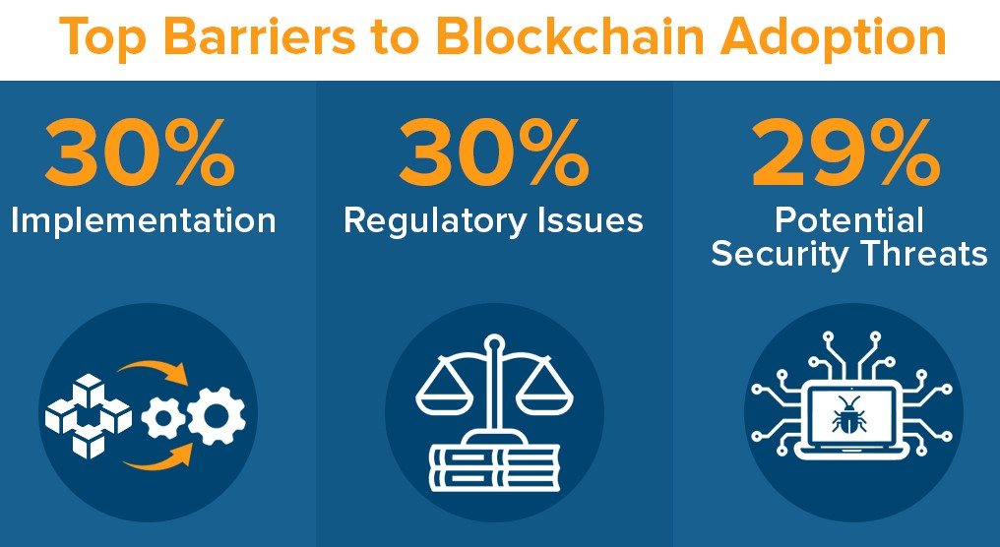

Barriers to Blockchain Adoption
The widespread adoption of blockchain technology has been hindered by several key barriers. One significant obstacle is the complexity of implementation, accounting for approximately 30% of the challenges faced. Organizations often encounter difficulties in updating existing infrastructure and integrating blockchain with their current systems. Another major hurdle, accounting for around 30% of the barriers, is regulatory issues. Compliance requirements, legal frameworks, and data privacy concerns present challenges that inhibit organizations from fully embracing blockchain. Additionally, potential security threats, which constitute approximately 29% of the obstacles, instill caution among potential adopters. Vulnerabilities in smart contracts and the risk of data breaches are significant concerns that must be addressed. Overcoming these barriers through streamlined implementation processes, clearer regulatory frameworks, and enhanced security measures will be vital for facilitating widespread blockchain adoption and unlocking its full potential.